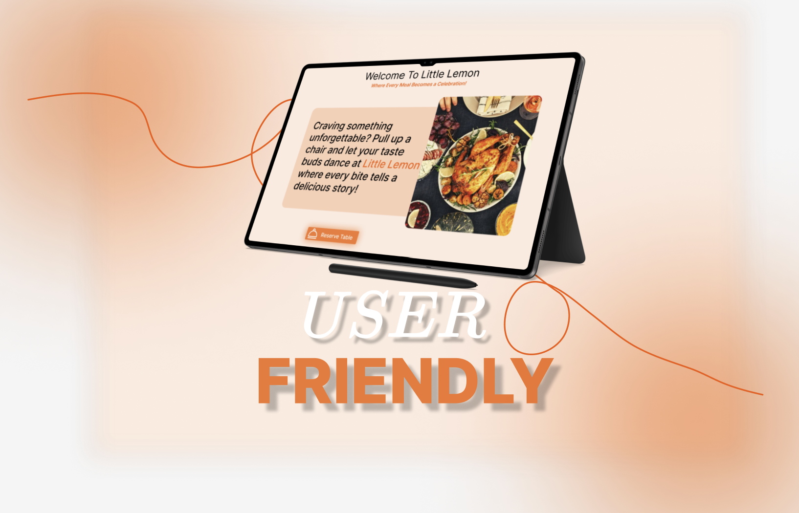
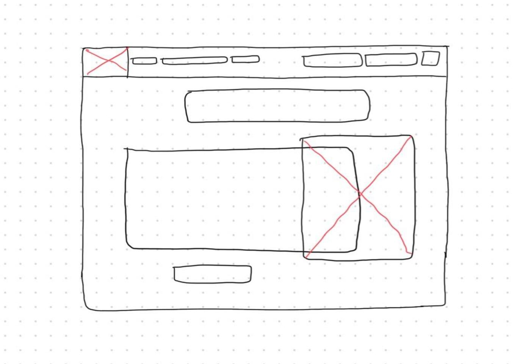
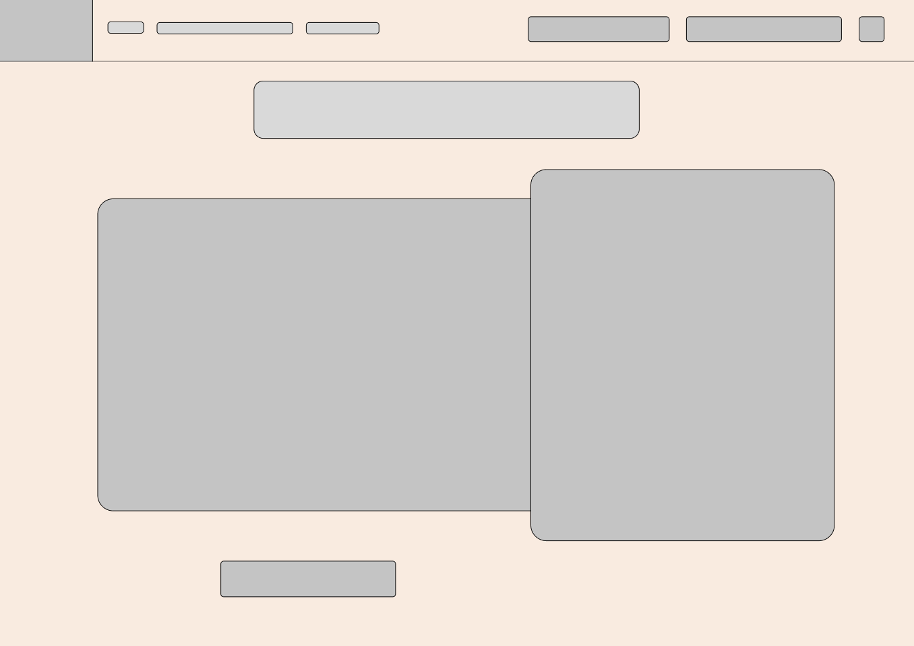
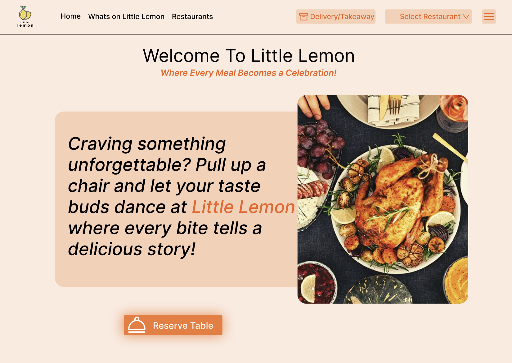
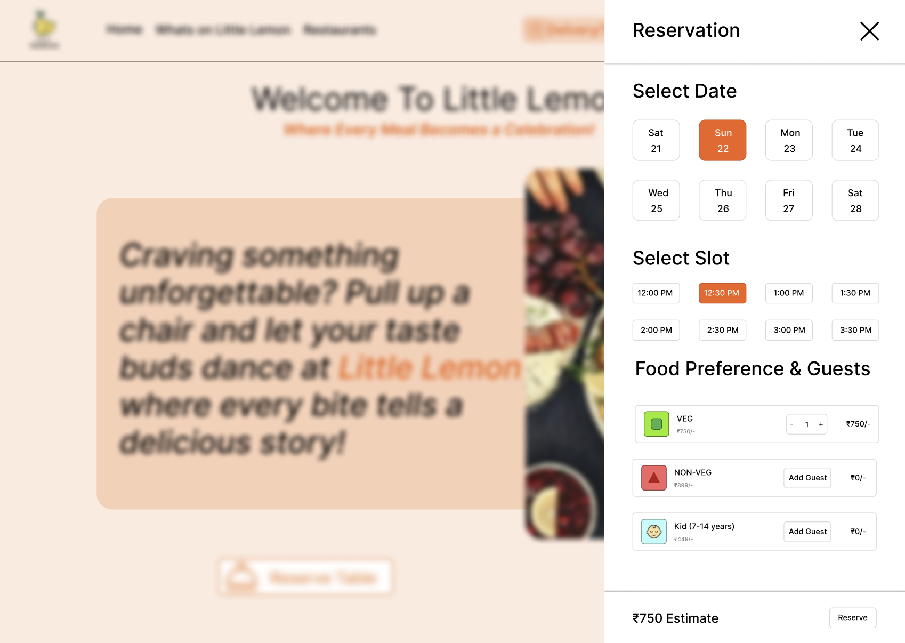
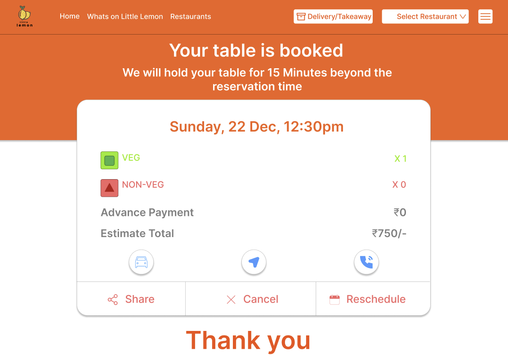

A full restaurant table-booking UX — from research and wireframes to a high-fidelity Figma prototype. Meta UI/UX Certificate capstone project.

Little Lemon is a family-owned Mediterranean restaurant that needed a digital table booking experience. Their existing process was entirely phone-based — customers had to call during business hours, wait on hold, and often couldn't get through at all.
The goal was to design a simple, trustworthy booking flow that worked for all types of diners — from young tech-savvy users to older customers less comfortable with apps.
"Users need a way to book a table at Little Lemon quickly and confidently, without having to call during busy hours."
— Problem StatementI conducted user research to understand what diners actually need when booking a restaurant online. The key insight was that trust and simplicity matter more than features — people want to book fast and feel confident the reservation is confirmed.
Books on mobile during lunch breaks. Wants a fast flow — less than 5 taps to confirm. Hates unnecessary steps.
Plans ahead for special occasions. Needs to specify party size and dietary needs. Values clear confirmation.
Never booked online before. Needs reassurance at every step. Big "Book Now" button, simple language, instant feedback.
I followed the full UX design process — from rough sketches to a tested, high-fidelity prototype. Every decision was backed by what I learned from the research phase.
User interviews, competitive analysis of AB's & Zomato, defining pain points in existing booking flows.
Problem statements, user journey maps, paper wireframes exploring different booking flows.
Digital wireframes in Figma, then high-fidelity screens with the Little Lemon brand — yellow, green, clean typography.
Usability testing with 5 participants. Iterated on the date picker, confirmation screen, and form labels based on feedback.
I started with paper sketches to explore layouts quickly, then moved to low-fidelity digital wireframes in Figma to test the core booking flow before adding any visual design.


The final prototype covers the complete booking journey — from the landing page to the confirmation screen. Key design decisions included a sticky date picker, clear progress indicators, and an instant confirmation card that users could screenshot.



After usability testing and iterating, the final prototype tested well across all three user personas. The biggest win was reducing the booking flow to 4 simple steps — date, time, party size, confirm.
Research first, design second. The user interviews completely changed my first design idea. The phone-call pain point I discovered shaped the entire project direction.
Iteration is the real design process. My first wireframe looked nothing like the final design. Every test session revealed something I hadn't considered.
Confirmation matters more than I thought. Every test user mentioned the confirmation screen first when asked what they liked. People need to feel sure their booking went through.
Simple beats clever. I originally designed a fancy animated date picker. Users found it confusing. A basic calendar was 10× more intuitive.